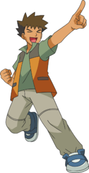
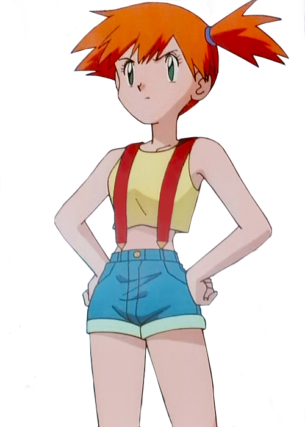
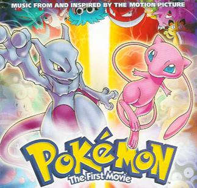

C'est le personnage principale. Tout comme le jeu, il a pour objectif de devenir le meilleur dresseur de Pokémon !
Après 20 ans, il a toujours 10 ans... 
タケシ (Takeshi) dans la version Japonaise
Brock dans la version Nord Américaine
Pierre dans la version Française
Brock est le premier "Gym Leader" qu'Ash rencontre et avec qui il a voyagé tout au long de l'histoire. En fait, jusqu'aujourd'hui, Brock est le second personnage qui
apparait le plus souvent. Il n'était absent que durant 1 saison. La spécialité de Brock étaient les Pokémon de type Roche. Mais au fil de l'histoire, il s'est occupé de toute
sorte de Pokémon. Son rêve est de devenir le meilleur éleveur de Pokémon. Il a le défaut d'essayer de draguer chaque jolie femme qu'il rencontre.

カスミ (Kasumi) dans la version Japonaise
Misty dans la version Nord Américaine
Ondine dans la version Française
Misty est le premier personnage avec qui le personnage a voyagé. Ils se sont rencontrés devant une rivière lorsqu'Ash été entrain de fuir une horde de Pokémon.
Après avoir complètement carboniné le vélo qu'il a "emprunté", elle a décidé de le suivre jusqu'au prochain Gym. Surprise, Misty est la deuxième "Gym Leader"!
Contrairement à Brock, Misty n'est restée que durant 2 générations. Elle laissa sa place à plusieurs autres personnage feminins qui représentent en réalité les personnages
féminins dans les jeux de la série originale de chaque génération. En fait, Pikachu réussit à carboniser la bicyclette de chacune de ces filles.
La spécialité de Misty sont les Pokémon de type Eau. Son rêve était de devenir la meilleure dresseuse de Pokémon de type Eau.
La mascotte
Pikachu est le premier Pokémon du personnage principal, et c'est aussi la mascotte de la série.
L'histoire
L'histoire est identique à celle du jeu. Ash doit combattre les 8 "Gym Leaders" de chaque région afin d'entrer dans le tournois final. Cependant,
contrairement au jeu, Ash ne combat pas les "Elite 4" à la fin, mais plutôt contre d'autres dresseurs de Pokémon dans un tournois d'élimination. Bien qu'ils existent
dans l'Univers du dessin animé, ils ne jouent pas le même rôle.
Autres
Les films
Chaque année ou deux, un nouveau film de Pokémon sort. Généralement, les films mettent en vedette des Pokémon
légendaires. Ce sont des Pokémon très rares et très puissants dans les jeux. Actuellement, il y en a 19.
